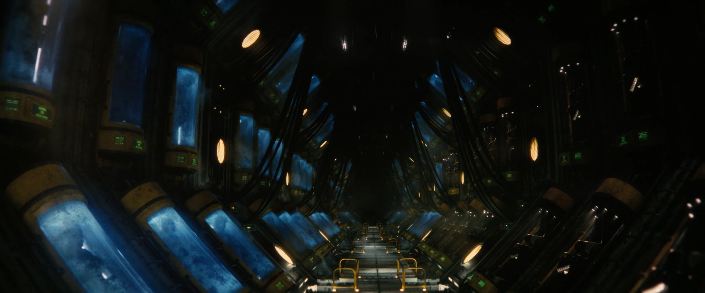
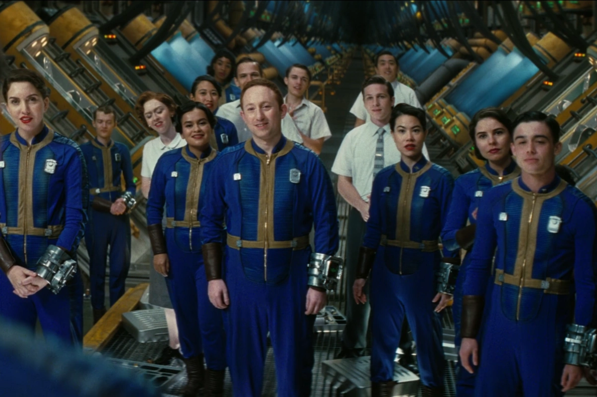

バッズ・バッズ（Bud's Buds）
—— バッド・アスキンス
バッズ・バッズ（Bud's Buds）は、ボルトテック・コーポレーションというより広範な組織の中でバッド・アスキンスによって組織された、実験的な経営訓練グループであり、ドラマ『Fallout』に登場します。
バッドによれば、このグループの公言された目的は、他のあらゆる勢力よりも長く生き残り、彼らを圧倒することによって「完全な独占状態」を達成することでした。グループのメンバーは、ボルトテック大学の最近の卒業生を含む、厳選されたボルトテック社の若手社員たちでした。

概要
バッズ・バッズは、ボルトテック社の役員であったバッド・アスキンスによって組織された、実験的な経営訓練グループです。ドラマ版『Fallout』において、シリーズの中核を成す重要な勢力として描かれています。
彼らの目的は、他のあらゆる勢力よりも「長く生き残る」ことでウェイストランドを圧倒し、地上の完全な独占状態を達成することにあります。創設者のバッドは「究極の大量破壊兵器は『時間』である」と主張しており、このグループはその異常な思想をそのまま体現した組織です。
Vault 31における計画
グループのメンバーは、ボルトテック大学の卒業生の中でも特に優秀な若手社員で構成されています。核戦争が勃発した際、彼らは用意されていた「Vault 31」へと入り、全員がコールドスリープ（冷凍睡眠）に入りました。
ボルトテック社の投資家たち（実際にはエンクレイヴ）の協力を得て、バッドの構想は最終的にカリフォルニア州サンタモニカの地下に建設された3つのVault（相互接続されたVault 31、Vault 32、Vault 33）によって結実することになります。
Vault 31にはバッズ・バッズのメンバーが保存されるコールドスリープ用のポッドのみが設置される一方で、Vault 32と33には実際の民間人の人口が収容されることになりました。30年ごとに、あるいは必要に応じて、バッズ・バッズのメンバー1人がポッドから目覚めさせられ、Vault 31から接続された他の2つのVaultの住民の中へと解放されます。
Vault 32と33の住民は皆、「Vault 31も自分たちと同じような普通の居住者がいるVaultである」と教え込まれていました。「バッズ」たちは、災害を人為的に引き起こすなどの手段を用いてVault 32および33の監督官になる方法を見つけ、その地位を利用して住民たちを理想的なボルトテック市民へと教化・洗脳していきます。最終的な目標は、オリジナルのボルトテックのスタッフから「スーパー・マネージャー」の世代を繁殖させ、彼らが戦後の世界を自分たちのものとして主張し、君臨し続けることでした。
エンクレイヴとの関係・フェーズ2
すべての競争相手の排除に成功した後、すべての「バッズ」は再建の日（Reclamation Day）のために地上へと解放されることになっていました。しかし、これは実験の第1段階に過ぎず、投資家であるエンクレイヴがVault-Tecとウェイストランドに対して抱いている包括的な目標の一部に過ぎないことが示唆されていました。
Vault 31の住人たちは、エンクレイヴの「投資家」によって計画されバッドが承認した「フェーズ2（第2段階）」の存在について、少なくともある程度は内情を知らされていました。このフェーズの詳細は不明ですが、Vault 32および33の住民と、「ヒューチャー・エンタープライズ・ベンチャーズ」と呼ばれた強制進化ウイルス（FEV）が関与することが示唆されています。
戦後の活動
爆弾が投下された当日、バッズ・バッズのメンバーはVault 31へと群がり、クリオポッド（冷凍睡眠ポッド）に入りました。大戦争から約219年後の2296年になっても、グループのメンバーの大多数は依然として冷凍睡眠の状態で眠っていました。
実験のプロセスは、2294年までの217年間は中断されることなく続きました。しかしこの年、Vault 32の住民たちは3つのVaultとVault 31の「管理層」の背後にある真実を突き止めてしまったようです。これが原因で彼らは反乱を起こし、ついにリー・モルデイヴァーのレイダーグループがVault 32に侵入し、Vault 32の住民を装ってVault 33を襲撃しました。
バッド・アスキンス自身は、自分自身をいわゆる「ルンバの上の脳」へと変えることで、大戦争後も219年間生き延びることができました。2296年には、Vault 31から目覚めて外に出たバッズ・バッズのメンバーの一部も生存しており、その中にはハンク・マクレーン、ベティ・ピアソン、ステファニー・ハーパー（ステフ）らが含まれていました。
崩壊
2296年7月、ハンクの息子であるノルム・マクレーンがVault 31に侵入し、バッズ・バッズの背後にある真実を発見しました。ノルムはVault間の通信を妨害し、バッドのロボットの体を破壊して彼を無力化しました。同時に、クラーク、クラウディア、ピート、ロニー・マッカーティを含む、冷凍状態にあった22人のVault 31の居住者を解放しました。
バッドの死にもかかわらず、彼の訓練生たちは彼の計画を固く信じており、依然としてそれを実行するつもりでした。バッドの個人助手であったロニー・マッカーティはフェーズ2を（少なくともある程度は）知らされており、彼はフェーズ2を開始するために投資家と接触する意図を持って、再起動されたVault 31の居住者たちをかつてのVault-Tec本社へと導きました。
ノルムの欺瞞が発覚した後、訓練生たちは最終的にVault-Tec本社でラッドローチの群れの攻撃の犠牲となってしまいます。ノルムとクラウディアはどうにか生き残りましたが、他の幹部たちは殺されるか重傷を負い、ロニーの運命は不明のままです。
バッズ・バッズ、Vault-Tecらしい冷酷さが出てて最高だなー。
「時間は究極の武器」って言って、エリート社員を冷凍保存して次世代の支配層にする発想が、ウェイストランドでの泥臭いサバイバルと対極すぎてヤバいよね。安全な地下から文字通り時間を使って勝とうとする姿勢は、ドラマならではの素晴らしいヴィラン描写だったと思う！
FEV絡みの「フェーズ2」とか、こういう裏設定とかロア掘り下げるのはたまらんね。
This article uses material from the Fallout wiki at Fandom and is licensed under the Creative Commons Attribution-Share Alike License.